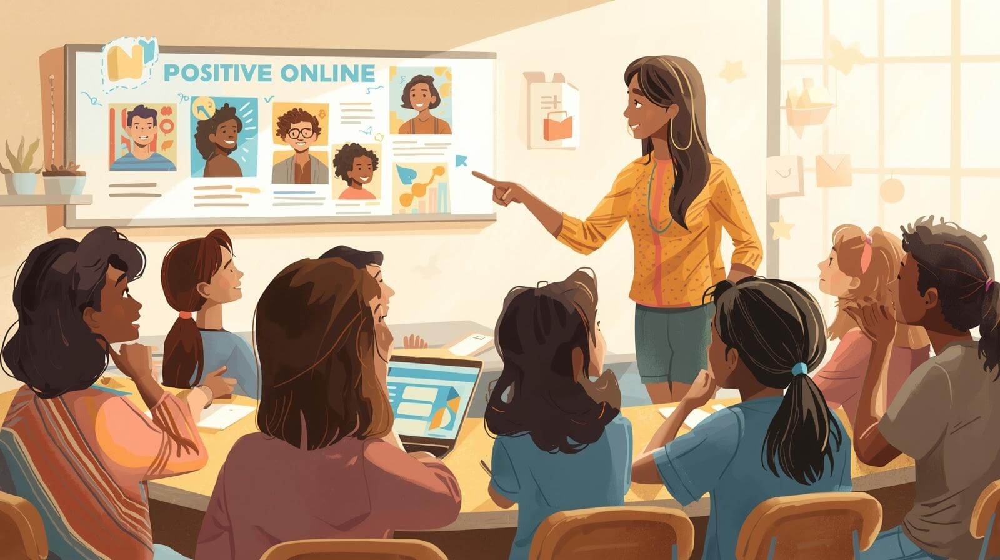

In today's connected world, equipping students with the skills to be responsible, ethical, and safe digital citizens is a necessity. As educators, we have a crucial role in guiding our students through the complexities of the online landscape. But how do we help them become good digital citizens? What practical steps can teachers take in the classroom? As a society what challenges are we facing as the digital landscape continues to rapidly evolve?
This past week, the importance of privacy and cybersecurity has really resonated with me, especially when considering the increased risks students in out classrooms face. It's clear that the skills students need aren’t only technical; they are fundamental life skills for the 21st century.
The Rise of Cyber Threats and Cyberbullying
The digital landscape is constantly evolving, and so are the threats. The focus on privacy and security is more critical than ever, especially for young people. All the while, youth are the most at risk for issues such as cyberbullying.
Cybersecurity Threats
According to the Canadian Centre for Cyber Security, cyber threats are on the rise across Canada. These threats affect businesses, critical infrastructure, and individuals, including students.
In 2022, 59% of Canadian organizations reported experiencing a cyber security incident. While these numbers focus on businesses and organizations, the reality is individual users, including youth, are frequently targets of phishing scams, malware attacks, and identity theft. As teachers, we need to consider our role in educating youth about the rise in cyber crimes and how to stay safe and vigilant, because let's face it, convenience often gets in the way of security and privacy.
Cyberbullying
Equally concerning is the issue of cyberbullying among adolescents. Research from MediaSmarts, Canada's Centre for Digital and Media Literacy, consistently shows that cyberbullying remains a persistent challenge for students.
According to their studies, approximately one-third of Canadian teens have experienced cyberbullying. This digital violence can have profound impacts on mental health, academic performance, and well-being. The widespread reach of online platforms can intensify the effects of bullying, making it difficult for victims to escape. While online anonymity can make for an attractive enviroment for perpetrators
Teaching a Moving Target
While the need for digital citizenship education is clear, implementing these practices faces a unique challenge: the pace of technological change. We are essentially trying to educate students on a moving target. It feels as if new social media platforms, AI tools, applications, and sophisticated cyber threats emerge daily. Teaching around specific platform features becomes outdated quickly, making a checklist approach to digital citizenship ineffective.
Because of the ever-changing digital landscape, the goal of digital citizenship education must pivot from platform-specific rules to fundamental skills that are applicable universally and with permanence. I believe that we must focus on teaching these transferable skills:
- Critical Thinking and Evaluation: The ability to question the source of information, identify misinformation, and understand the nature of algorithms
- Ethical Reasoning: The ability to apply principles of respect, fairness, and empathy to any interaction, whether online or offline.
- Security Literacy: Understanding the concepts of authentication, encryption, and data ownership, rather than just knowing how to set a password on a specific app.
- Continued Learning: The mindset that students will need to continuously learn and adapt their security and privacy practices as technology evolves.
If teachers can focus on teaching these enduring fundamentals, we prepare students not just for the internet of today, but for the technological challenges and opportunities of their future. Teaching these skills will also translate to offline interactions.
Classroom Practices for Empowering Digital Citizens
Here are some classroom practices that you can take into your own classroom to educate students on being a good digital citizen:
- Hands-On Security Habits: We should regularly practice and model good security habits. This includes creating strong, unique passwords, using password keychains, and teaching the fact that conveinence is the enemy of security. Teachers can incorporate the use of engaging tools like Interland, a Google application to teach students about security, privacy, and digital citizenship. This can make learning about these topics fun, structured, and effective. Understanding multi-factor authentication and recognizing scamming attempts should also be key components.
- Protecting Personal Privacy: The importance of online privacy should be emphasized. This means having open discussions about why it's crucial not to share full names, addresses, or other personal information online. Students should be aware of their digital fingerprint and to be aware of what kind of information is ok to share online.
- Digital Ethics Across the Curriculum: In Nova Scotia, philosophy is not longer a subject in the curriculum. This means that teachers are responsible for discussing the ethics surrounding digital citizenship in other content areas. In Language Arts, we might analyze the impact of online communication, or upack the ethics present in readings to see how they apply to the digital world. In social studies, we could discuss the global implications of data sharing. These discussions provide crucial moments to address issues like cyberbullying, promote empathy, and the importance of respectful online interactions.
- Digital Permanence: A critical lesson is the permanence of the internet. Students sould explore how posts, photos, and comments can have long-lasting consequences, potentially affecting future job prospects, relationships, and reputations.
I believe that if teachers can focus on the fundamentals of digital literacy and ethics, we can prepare students not just for the internet of right now, but for the rapidly evolving digital challenges and opportunities of their futures.